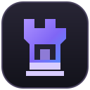

What works today
The Windows launcher interface, local profile settings, live Modrinth project search, and Microsoft/Xbox sign-in up to the Minecraft Services app-registration check.

Rook's Client is an in-development desktop launcher project for Minecraft: Java Edition, with a custom interface, separate profiles and a Microsoft sign-in flow.
The Windows launcher interface, local profile settings, live Modrinth project search, and Microsoft/Xbox sign-in up to the Minecraft Services app-registration check.
Minecraft installation, game launch, actual mod installation, cosmetics and the in-game HUD are not implemented. Gameplay remains disabled.
Sign-in happens through Microsoft's device-code page. Rook does not ask for your Microsoft password. Authentication tokens are not saved by the current build.
Before gameplay is enabled, the launcher must authenticate the account and verify Minecraft ownership. Rook's Client is independent and is not affiliated with Mojang Studios or Microsoft.